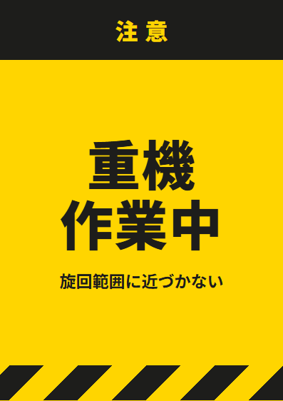

「重機作業中」の張り紙（A4・無料PDF）
バックホウなどの作業範囲に。下の段に「旋回範囲に近づかない」と入っています。

この張り紙の色
黄色は「注意」の色です。黄色の地に黒い文字は、離れていても目に入りやすい組み合わせです。JIS Z 9103（安全色）の考え方に合わせています。
使い方のヒント
- 目の高さ（床から1.5mくらい）に貼ると、歩きながらでも目に入ります。
- 同じ張り紙を貼りすぎると、慣れて見なくなります。本当に危ない場所にしぼって貼るのがおすすめです。
- 屋外ではラミネートか、透明の袋に入れて貼ってください。
この張り紙は、法令で決められた標識（安全標識のJIS規格の図記号など）の代わりではありません。法令で表示が決められている場所では、決まった標識を使ってください。